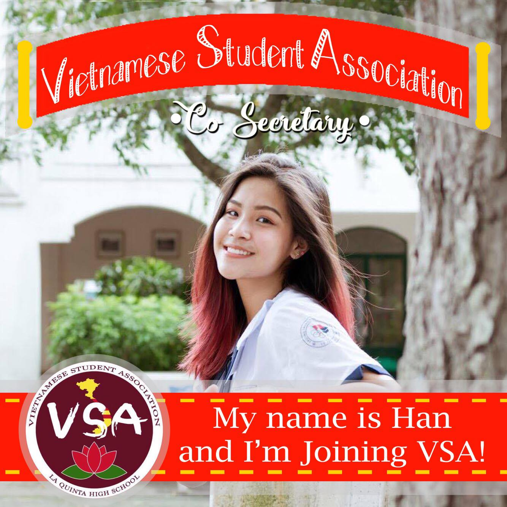
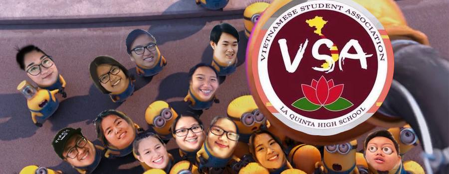
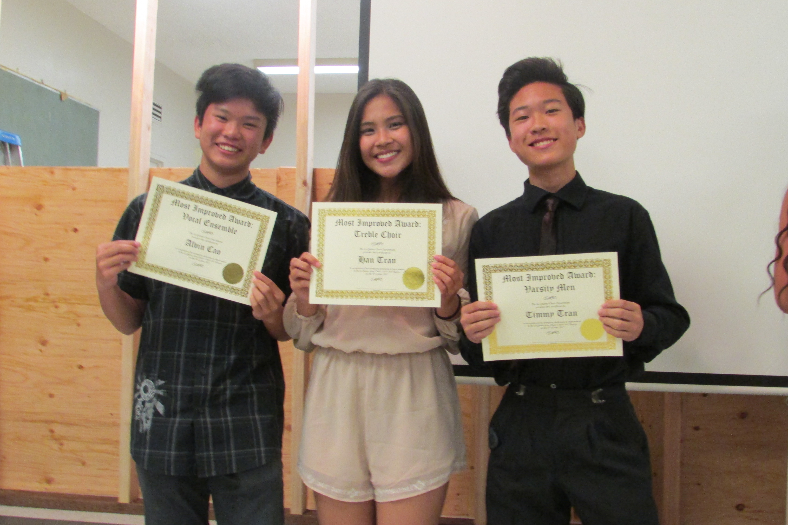
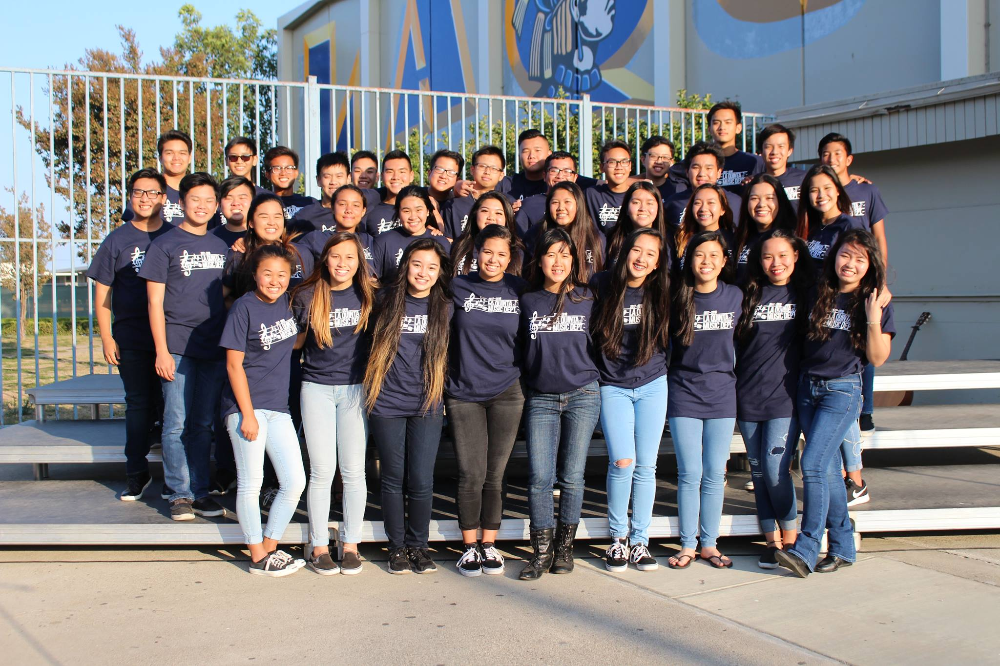

I was born in Vietnam, but I moved here since May 18th, 2016 which is approximately
one year and a half ago. What I've achieved over a year that I'm about to list now is also
what I've achieved since I came to the US. First, I had 8 classes last year and I got straight
A's in 7 classes, but I got a B+ 89.95% in the other one class. I got 3.92 GPA last year.
Secondly, I became VSA's co-secretary, and I volunteered in every events of VSA last year. Thirdly,
I received most-improved award in my choir class and I also got into Vocal Ensemble of La Quinta
High School. Lastly, I was invited to the Principal's Lunch by Ms.Lewis. I'm still trying to develop
myself, explore more in my abilities and improve my weaknesses.
My club - VSA
 Choir Most-Improved Award
Vocal Ensemble
Backgrounds credit to: Pinterest